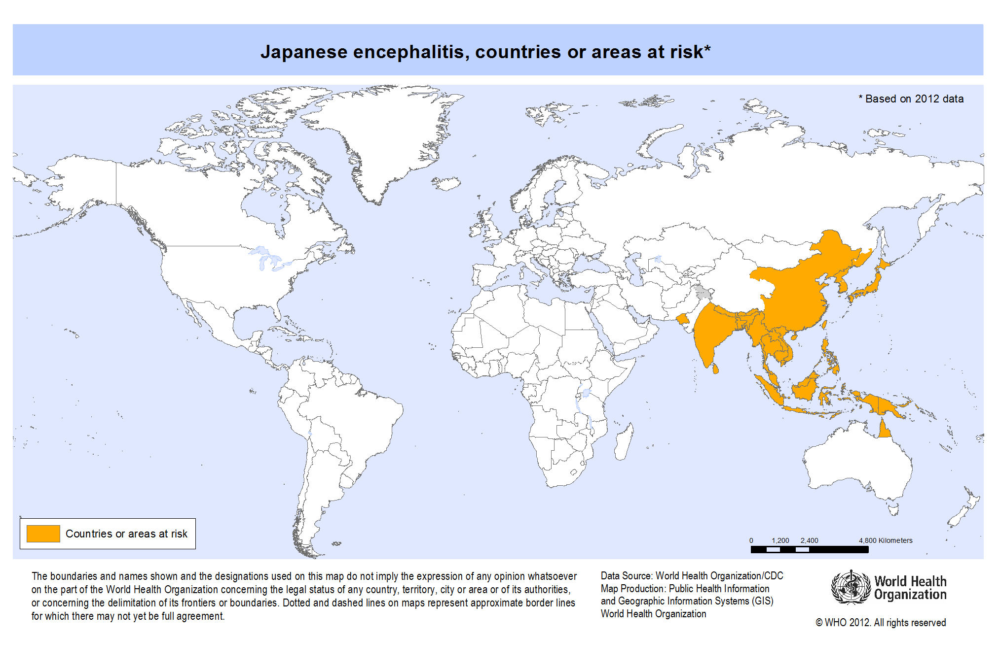
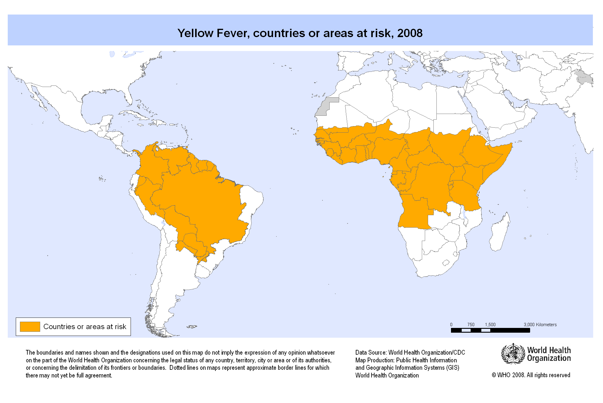

Tropical Flavivirus Infections
Austin Meyer, PhD
MS4
Case #1
Initial presentation
A 26 y/o presented to the ED in Toronto in early September with fever, myalgia, and headache. Headache started 3 days earlier. It was intermittent and was accompanied by some mild diplopia. She vomited twice yesterday and had no other GI symptoms.
She recently returned from a trip to Thailand where she had bloody diarrhea about two weeks ago that resolved in a day with administration of an unknown antibiotic. Her trip was last minute and she did not consult a travel clinic. She had not traveled abroad previously. Most of her time in country was spent trekking through the forests and rice field areas.
No PMH
No PSH
No Meds
No allergies
Objective information
On admission
PE: WNL
Labs: WBC = 12.3, Na = 124, Everything else WNL
Micro: Thick and thin smears negativeOn 2nd day post-admission
PE: Diminished consciousness, neck stiffness, drooling, lower extremity stiffnessBlood:
Negative for CHIKV, rabies, herpes B, Snowshoe hare virus
Positive for Dengue IgM, WNV (1:10 titer)
LP: Leuks = 218, PMN = 52%, Protein = 82 mg/dL, Glucose = 78 mg/dL
PCR: Negative for bacterial, fungal, mycobacterial, HSV, EBV, WNV, adenovirus, and enterovirus
Rectal Swab: Positive for Salmonella paratyphi B
MRI: Normal
What does she have?
JEV is found largely in the East Asia

Further information about JEV
Case #2
Initial presentation
A 47 y/o American woman presents to the ED two days after returning from a trip to Sao Paulo, Brazil with her 13 y/o son. Three days ago she began feeling acutely ill with high fever, chill, frontal headache, back pain, and muscle pain. The next day she boarded a direct flight to Chicago. During the flight, she felt weak and developed a sore throat. Yesterday, she developed non-bloody diarrhea with nausea.
Since symptom onset she has been receiving amoxicillin and acetaminophen.
On physical exam, she is in acute distress. No signs of bleeding and a normal neuro exam.
Vitals are temperature of 35.6C, HR 60, BP 120/80
What do we think she has?
More information
Platelets = 98K, WBC = 4K, Cr = 6.9, BUN = 151, AlkPhos = 228
ALT/AST = 23K/49K, Tbili = 3.5, Dbili = 2.6
PT = 26% normal, INR = 3.3, CRP = 13.8
What do we think she has?
The next day her eye looks like this

YF is found largely in S. America and Africa

Case #3
HPI
A 27-year-old woman was seen in the emergency department of this hospital during the summer because of arthralgias and a rash. She had just returned from a trip to Turks and Caicos.
The patient had been well until 5 days before this evaluation, when myalgias in her hands and shoulders developed, along with back pain, neck pain, and a retro-orbital headache.
Later that day, fever occurred (temperature, 39.0°C) and was accompanied by chills, nausea, decreased appetite, and sore throat. She also noted a vaginal ulcer, ulcers on the side of her tongue, decreased taste sensation, and enlarged, tender lymph nodes in her neck and groin.
The next morning, the patient awoke with a rash on her right forearm. The lesions were pink, pruritic, and nonpainful. Within 1 hour, the rash spread to her torso and both arms and legs.
Her gums bled easily when she brushed her teeth, but the rash remitted.
On the fifth day of illness, a new pruritic, erythematous rash developed, beginning on her palms and spreading to her arms, chest, abdomen, back, and legs, sparing the soles of her feet.
Objective information
The patient appeared well. The temperature was 36.4°C, the pulse 69 beats per minute, the blood pressure 135/87 mm Hg, the respiratory rate 18 breaths per minute, and the oxygen saturation 98% while she was breathing ambient air.
There was subtle swelling of soft tissue in the hands but no joint effusions.
Tourniquet test was positive
What do we have in the differential?
Rash spared the palm and soles

Dengue is found everywhere JEV or YF is found

Case #4
Presentation and workup
A 45-year-old woman was seen in an outpatient clinic in Heidelberg, Germany for fever of up to 39°C and rash covering her trunk, arms, and legs.
Fever had started on 2 days previously, which was 6 days after she had returned from a 3-week vacation to peninsular Malaysia and Sabah, Malaysian Borneo.
Laboratory analyses showed a slightly elevated C-reactive protein level of 5.2 mg/L (reference range <5.0), but liver function test and complete blood count results were within reference range.
During the next 3 days, the fever subsided, but the patient experienced a sore throat, bilateral conjunctivitis, and a burning sensation of the palms and soles. These symptoms were accompanied by swelling of the hands and increasing arthralgia of the wrists, palms, and fingers. There was no lymphadenopathy.
Two days later, the patient experienced sudden bilateral dull and metallic hearing; in her left ear, she experienced a very short delay between a sound and her perception of the sound.
What to do?
What does she have?
Zika is found in much of the tropics